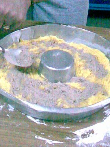

Torta de banana y chocolate
Anoche preparamos con mi mamá 2 tortas de banana y chocolate, un postre tradicional en mi casa. Les dejo la receta para los que quieran probar hacerla (incluye pasos detallados y fotos calidad celular):
Ingredientes
- 250 gramos de crema (un pote chico)
- 4 huevos
- 2 tazas de azúcar
- 3 tazas de harina
- cacao para espolvorear
- 2 bananas
Instrucciones
En un recipiente como el de la foto, colocar la crema y el azúcar:
{kind=link}
En el mismo recipiente poner los 4 huevos:
{kind=link}
Y esencia de vainilla (el siempre bien ponderado vainillín), un chorrito:
{kind=link}
Y empezamos a batir hasta que quede de un color uniforme; luego vamos agregando las tazas de harina mientras seguimos batiendo:
{kind=link}
Luego de batir por 10 minutos se obtendrá una mezcla espesa:
{kind=link}
Si notamos que la mezcla esta muy espesa, tanto que no se puede batir, podemos ablandarla echándolo un chorrito de soda:
{kind=link}
Luego hay que tomar un molde para torta y untarlo con manteca o con aceite:
{kind=link}
Volcar la mitad de la mezcla en el molde:
{kind=link}
Y esparcir para ocupar todo el fondo:
{kind=link}
Luego espolvorear cacao:
{kind=link}
Yo utilizo cacao El Quillá, el mejor cacao de Santa Fe:
{kind=link}
Luego cortar las bananas en rodajas y cubrir la superficie:
{kind=link}
Y volver a espolvorear cacao:
{kind=link}
Volvemos al recipiente con la mezcla. Le agregamos media taza de soda para ablandarla y volvemos a batir:
{kind=link}
El objetivo es que quede más blanda para poder esparcirla sobre las bananas con cacao sin desparramarlas:
{kind=link}
Y emparejamos nuevamente con el tenedor:
{kind=link}
Por último, espolvoreamos azúcar:
{kind=link}
Y al horno hasta que el azúcar se dore:
{kind=link}
El resultado final, para motivar a que preparen esta torta:
{kind=link}
Eso fue todo, una receta fácil para convidar a familiares y amigos. Anoche hicimos dos, una la mandamos para Brasil y la otra la comimos hoy a la tarde con mate. Tengo en casa algunas porciones que sobraron, por si pasa alguien de vista esta semana :D
Y para el navegante anónimo que encuentre esta receta: ¿Seguiste estos pasos? ¿Cómo te salió la torta? Me gustaría mucho saberlo.
Comentarios
Comments powered by Disqus